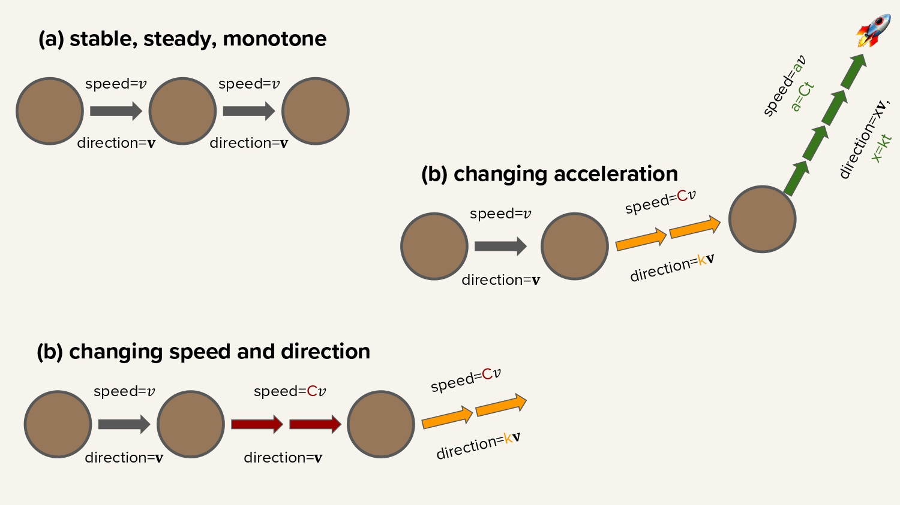

Teaching
Teaching Philosophy
My life shaped my teaching and supervision philosophy. We all start from different places and different backgrounds. It is unfair and unwise to judge people solely on the knowledge — merely facts — that they hold at a given moment. We live in a rapidly changing world. Many facts, knowledge, and skills become outdated not over 50 years, but over 5–10 years, or even within 1–2 years. People who only “know” do not get through these changes. My main teaching outcome for students is to learn how to learn.

Let me explain it with physics. One particle (a) moves at a stable speed in a stable direction
(uniform motion, a = 0). But will it be able to adapt to new goals, to a new world?
Another one (b) is not only constantly moving, but also constantly increasing its speed and
even changing direction (accelerated motion, a = C). That one is already more flexible
in this developing world. The final one does something even crazier: it is able to change
how much it changes its speed (non-linear accelerated motion, a = Ct). This is the
effect I want to achieve when working with students — to improve their ability to learn.
Be non-static, always move, improve your movement. Then you can achieve anything and move
anywhere you want in this world.
Courses
I have taught several types of courses — large lecture courses as well as practical courses and seminars.
Responsible AI and Language Technologies — Seminar
A seminar series covering Responsible AI and NLP from many sides: ethics, fair data collection, technical papers on AI for Social Good, and philosophical discussions about designing technology and AI for people.
Projects in Natural Language Processing — Practical Course (BSc & MSc)
Students in groups of three carry out practical projects on part of a real research project or participate in shared tasks. Several course projects resulted in papers at top-conference workshops ([example 1], [example 2]).
Advanced NLP — Lecture Course
Lecture course on advanced topics in NLP.
Introduction to NLP — Lecture Course
Introductory topics in NLP.
Shared Tasks
I led or was part of the organising team of several multilingual shared tasks:
TextDetox @ CLEF 2025
- Task
- Toxic → non-toxic style transfer
- Languages
- 15
- Teams
- 30
LLMs with Limited Resources @ WMT 2025
- Task
- Multi-task tuning of smaller LLMs for a language
- Languages
- 2
- Teams
- 5
BRIGHTER @ SemEval 2025
- Task
- Detecting basic emotions in text
- Languages
- 28
- Teams
- 150+
TextDetox @ CLEF 2024
- Task
- Toxic → non-toxic style transfer
- Languages
- 9
- Teams
- 30
Student Supervision
Since the start of my PhD, I have supervised several dozen students from around as many countries, at all levels — Bachelor, Master, and PhD. They have gone on to highly successful careers: PhD positions, lead developers in companies, and start-up founders.
| Student | Type | Title | Paper | Next position |
|---|---|---|---|---|
| [Name Surname] | Master thesis [Year] |
[Thesis title] | [Venue YYYY] | [PhD at …] |
| [Name Surname] | Bachelor thesis [Year] |
[Thesis title] | — | [Company / role] |
| [Name Surname] | Guided research [Year] |
[Project title] | [Venue YYYY] | [Next position] |
| [Name Surname] | PhD [Years] |
[Dissertation / topic] | [Venue YYYY] | ongoing |